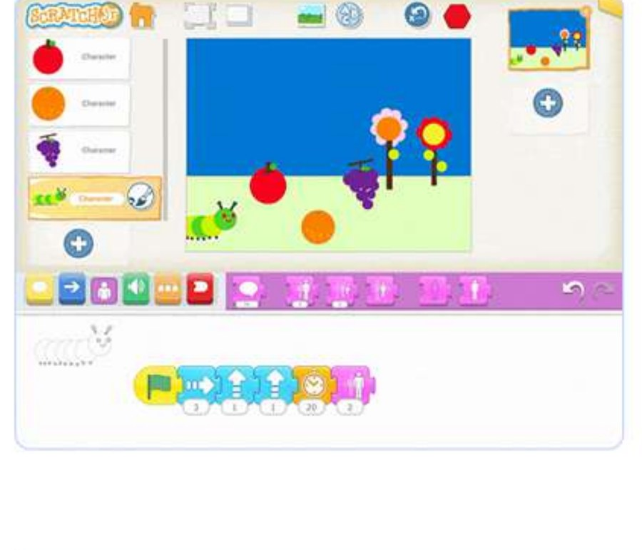

Contoh tampilan/proyek dari Modul 05
Modul ini memperdalam Scratch Junior menuju cerita animasi yang lebih kompleks (kartu pos hidup, karakter animasi multi-scene), lalu memperkenalkan Canva sebagai kanal ekspresi kreatif yang lebih bebas lewat doodle, stiker, dan desain rutinitas harian.
Ini adalah jembatan menuju Modul 6 di mana anak akan membuat game yang lebih kompleks — kepercayaan diri anak dengan Scratch Junior perlu benar-benar matang di sini. Canva juga melatih kreativitas visual mandiri sebagai keterampilan paralel yang berharga.
Anak membuat animasi cerita pendek sendiri dengan banyak karakter di Scratch Junior, dan berkreasi bebas dengan stiker, doodle, dan desain rutinitas harian di Canva.
Sebelum mengajar modul ini, pastikan Anda 100% percaya diri dengan hal-hal berikut:
Di pelajaran Canva, tahan diri untuk tidak terlalu banyak mengarahkan — ini momen "fokus ke proses" di mana anak bebas bereksperimen dengan pilihan visual mereka sendiri.
Sebagai hasil modul ini, anak-anak melanjutkan belajar Scratch Junior dan menciptakan permainan mereka sendiri, kemudian mengasah pemikiran kreatif dan beralih ke pembuatan stiker dan desain rutinitas harian.
Jawab kelima pertanyaan berikut tentang modul ini. Anda perlu mendapat 80% atau lebih (minimal 4 dari 5 benar) untuk melanjutkan.
1. Kenapa modul ini disebut sebagai jembatan menuju kompleksitas Modul 6?
2. Saat anak mengerjakan pelajaran Canva (doodle/stiker), sikap tutor yang paling tepat adalah...
3. "Kartu Pos Hidup di Scratch Junior" menandakan anak sudah mampu...
4. Prinsip Kodland mana yang paling relevan saat membimbing pelajaran Canva di modul ini?
5. Kompetensi tutor yang krusial untuk modul ini, selain Scratch Junior lanjutan, adalah...